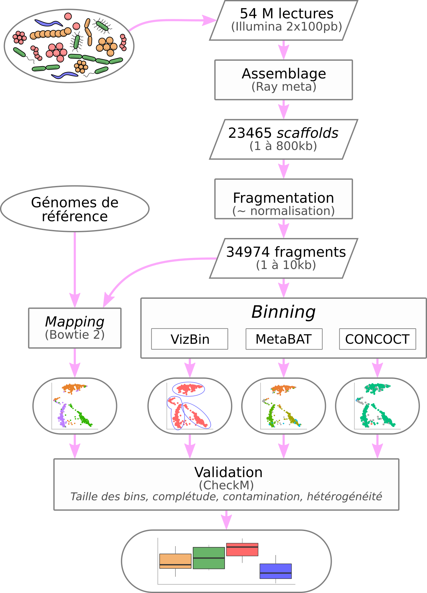
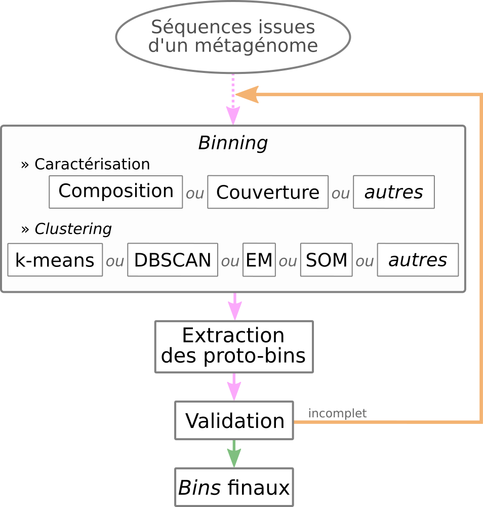
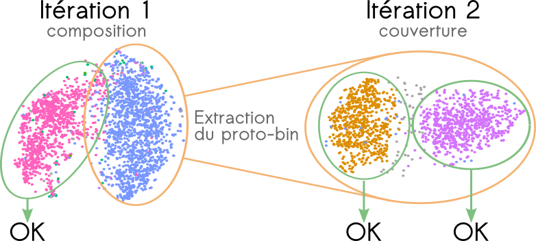

La métagénomique permet aujourd’hui d’étudier les micro-organismes non cultivables et ainsi d’appréhender le fonctionnement biologique de tout type d’écosystème. Néanmoins, le séquençage massif (ciblé ou non) ne permet pas toujours un inventaire exhaustif des micro-organismes et encore moins de relier la structure de la communauté et les fonctions biologiques qu’elle assure. Pour pallier à cela, il est nécessaire de reconstruire les génomes complets des populations présentes dans les environnements étudiés. En revanche, la faible taille des séquences générées par le séquençage haut-débit (< 500 pb) et l’incroyable diversité pouvant être retrouvée (1 g de sol peut contenir 109 cellules bactériennes représentant 106 espèces) rendent l’assemblage des séquences d’autant plus compliqué. De plus, les approches développées pour l’étude de génomes isolés, maintenant bien rodées s’avèrent inadaptées pour la caractérisation d’environnements complexes. Les algorithmes de traitement des données doivent donc être repensés pour pouvoir prendre en compte les caractéristiques propres à cette approche ultra haut-débit : masse considérable de données, multitudes d’organismes aux abondances inégales, profondeur de séquençage souvent insuffisante, organismes encore inconnus donc sans génomes de référence.
Ainsi, un des freins à l’exploitation de ces données, notamment leur assemblage, est la puissance de calcul disponible. En effet, pour être aussi exhaustif que possible, il convient de ré-analyser l’ensemble des données issues d’un environnement (plusieurs dizaines de téra-octects pour le seul microbiote humain). Cela passe nécessairement par l’utilisation de machines aussi performantes que possibles mais aussi de méthodes adaptées. Finalement, la grande part d’inconnu du monde microbien impose d’employer des méthodes non ciblées et de novo afin de s’affranchir des biais dus aux connaissances a priori.
Plusieurs stratégies ont été développées pour tenter de reconstruire des génomes à partir de données métagénomiques, notamment par l’utilisation du binning. Cette méthode consiste à établir le profil des fragments de génomes selon leur composition en nucléotides et/ou leur abondance au sein d’un ou plusieurs métagénomes. Deux contigs aux profils similaires appartiendraient ainsi au génome d’un même organisme. Il est cependant nécessaire d’assembler préalablement les données brutes pour augmenter la robustesse du binning.
Cette approche a été utilisée avec succès pour reconstuire 83 génomes, dont 29 complètement nouveaux, à partir de 32 millions de reads de métagénomes d’eaux saumâtres de la mer Baltique (Hugerth et al., 2015). Cette étude a permis la description des gènes, de la dynamique temporelle de la population et de la biogéographie d’un nouveau bactérioplancton. Evans et al., (2015) ont également utilisé ce type d’approche pour mettre en évidence deux archées méthanogènes ne faisant pas partie du phylum des Euryarchaeota à partir d’un aquifère profond, apportant ainsi un regard nouveau sur le cycle de méthane.
Le développement des méthodes de binning appliquées aux données métagénomiques est en plein essor. De nombreuses approches ont été envisagées (Sangwan et al., 2016 ; Soueidan et al., 2015), mais à l’heure actuelle aucun consensus ne s’est dégagé. Ce manque nous a conduit à évaluer les méthodes de binning existantes et à imaginer une nouvelle stratégie. Nous présenterons donc dans un premier temps une étude comparative à partir de jeux de données obtenues sur des communautés microbiennes artificielles de composition connue (e.g. : SRR072232, SRR606249). Dans un second temps, nous proposerons une stratégie originale de binning. Cette dernière intègre une caractérisation des séquences basée sur les "k-mers à trous" (spaced seed), des techniques d’extraction de données et de clustering issues du machine learning tout en exploitant les masses des données brutes et les connaissances existantes.
Plusieurs grandes catégories de méthodes de binning existent : les méthodes basées sur la composition de séquences, les méthodes basées sur la co-abondance des séquences et les méthodes hybrides. Il est également nécessaire d’évaluer la fiabilité et les performances des différentes stratégies de binning. La robustesse du binning repose en partie sur la taille des séquences fournies. Les données sont préalablement assemblées en contigs à l’aide d’algorithmes éprouvés. Ces contigs sont alors caractérisés par l’un des critères suivants : (i) la fréquence de k-mers (avec généralement k=4), (ii) la co-abondance des séquences au travers de différents réplicats, (iii) d’une métrique construite pour intégrer (i) et (ii) à la fois. Optionnellement, on peut extraire de ces profils les informations pertinentes et ainsi réduire la complexité des données à traiter. Ces profils sont ensuite clusterisés afin de constituer les bins. Pour finir, les bins sont soumis à une validation sur des critères biologiques.
TETRA (Teeling et al., 2004), pionnier dans l’approche basée sur la composition des séquences, se base sur la corrélation des motifs d’utilisation des tétranucléotides pour caractériser des séquences. Dick et al. (2009) ont exploité les travaux de Teeling et al. (2004) définir des clusters à l’aide d’une emergent self-organizing map. Par la suite, Nielsen et al. (2014) se basent sur la co-abondance des gènes dans de nombreux réplicats afin de regouper les séquences ayant des abondances similaires. D’autres méthodes hybrides ont émergé comme MetaBAT (Kang et al., 2015). Cette dernière exploite à la fois les fréquences des tétranucléotides et la co-abondance des séquences via une métrique empirique construite à l’aide de 1414 génomes bactériens complets. Les profils obtenus sont ensuite clusterisés avec un algorithme des k-medoids modifié afin de former les bins. Ding et al. (2015) ont proposé une approche basée sur des outils radicalement différents. Elle consiste à calculer la corrélation intrinsèque des nucléotides, à extraire les informations pertinentes de ces profils par une régression desmoindres carrés partiels (kernel partial least squares) puis à clustériser ces profils à l’aide d’une méthode de machine learning (machine à vecteurs de support, ou SVM).
La diversité des approches rend les évaluations et les comparaisons nécessaires. Pour ce faire, des métagénomes artificiels servent de données de référence dans l’évaluation des approches. Des outils dédiés à la validation du binning ont également été développés. C’est notamment le cas de CheckM (Parks et al., 2015) qui recherchent au sein de chaque bin des gènes-marqueurs présents en une seule copie au sein des génomes. D’autres part, le challenge CAMI (Critical Assessment of Metagenomic Interpretation ; McHardy et al., 2014) propose des protocoles pour une évaluation standardisée des différents outils.
Bien que les méthodes de binning permettent de reconstruire des drafts de génomes à partir de données métagénomiques, le postulat initial repose sur l’homogénéité de la composition en nucléotide et/ou sur une profondeur de séquençage uniforme au sein des génomes. Cependant, cette homogénéité peut être perturbée par les nombreux transferts horizontaux entre micro-organismes potentiellement très éloignés phylogénétiquement (GarciaVallvé et al., 2000), voire également entre procaryote et eucaryote (Hotopp et al., 2007). Ces échanges de matériel génétique vont modifier la composition locale en nucléotides des génomes. Les séquences ainsi obtenues ne répondront plus au premier postulat des méthodes de binning. Il en est de même au sujet de la non-uniformité de la profondeur de séquençage (Peng et al., 2012). De plus, des portions de génomes hautement conservées (e.g. familles de gènes) peuvent être partagées par plusieurs individus. Il est alors difficile de les attribuer à un individu plutôt qu’à un autre. Il pourrait ainsi être pertinent de les attribuer aux deux en même temps. Nous avons conduit une comparaison approfondie de différents outils de binning couvrant un large panel de techniques. L’évaluation des outils existants repose sur les métagénomes artificiels et les méthodes d’évaluation précédemment décrits. Ces outils sont alors jugés sur la pertinence des résultats obtenus mais aussi sur les ressources informatiques nécessaires au traitement des données. Ce travail permet alors d’identifier les atouts et inconvénients de chaque méthode et de proposer une nouvelle approche de reconstruction de génomes microbiens à partir de métagénomes.
Les assemblages préet post-binning sont assurés par des algorithmes robustes et éprouvés, à savoir les graphes de de Bruijn et l’Overlap-Layout-Consensus.
Pour reconstruire des génomes microbiens à partir de métagénomes, la stratégie itérative suivante est proposée : (i) Les séquences sont caractérisées selon de multiples critères (e.g.: fréquences des k-mers, co-abondances des séquences, etc.) ; (ii) La complexité des données générées pourra être réduite par des techniques d’extraction de données ; (iii) Les profils établis sont clusterisés pour former des bins ; (iv) Chaque bin ainsi formé est assemblé indépendamment des autres en vue de reconstruire de plus grands fragments de composition homogène ; (v) Un second assemblage cross-bins permet ensuite d’assembler des séquences chevauchantes mais dont la composition diffère localement (e.g. bordure d’une portion provenant d’un transfert horizontal). Les bins dont deux séquences ont été assemblées sont alors fusionnés ; (vi) Chaque bin est évalué selon les modalités des outils existants. Si un bin rempli les critères de validation, il est alors extrait et ne participera pas à l’itération suivante ; (vii) Les séquences ayant été utilisées pour générer des contigs sont supprimées du pool initial de séquences et ces contigs sont placés dans ce pool afin de d’entamer un nouveau cycle.
 Ce cycle se poursuit tant qu’il reste des séquences à traiter ou quand l’évaluation des bins (étape vi) produit de meilleurs résultats par rapport à l’itération précédente. Les régions uniformes en terme de composition ou de couverture sont alors correctement assemblées entre elles et des régions pourtant différentes en terme de composition et couverture peuvent aussi être assemblées. La caractérisation de séquences combine les différentes approches couramment utilisées pour la métagénomique non ciblée et de novo ainsi que l’approche basée sur les k-mers à trous (ou ”spaced seed ”) encore jamais appliquée pour ces études de novo . D’autres types de clustering seront testés comme le clustering ” flou ” permettantd’attribuer une même séquence à plusieurs bins. Les séquences communes à plusieurs espèces sont donc correctement attribuées. L’évaluation rigoureuse de ce clustering se basera sur des communautés artificielles précédemment décrites et se fera de la même manière que les outils précédemment testés. Le volume de données disponible imposera également l’utilisation de méthodes et architectures issues du Big Data, notamment avec l’utilisation d’Apache Spark. Ces outils permettent d’envisager la ré-analyse de grandes masses de données existantes.